The same source and the same two background palette lines. Both variants choose colors against ares’s documented RGB lookup; the lighting version can additionally choose shadow or highlight per pixel. These previews model that emulator, not calibrated analog hardware.
The ROM uses actual VDP shadow/highlight with PAL3 operator-mask sprites. No HBlank palette writes, new generations, added dithering or rescaling. Full-background masks can cost up to 32 hardware sprite pieces, 256 scanline pixels and 512 tiles (16 KiB). Actors/items are drawn ahead of the mask and remain normal.
Main art study / How it works and costs
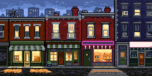
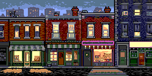
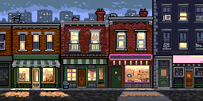
Displayed RGB shades: 24 → 54. Model squared-RGB error decreases 51.36%. This metric is not an artistic score.
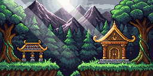
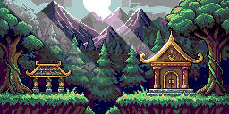
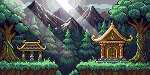
Displayed RGB shades: 22 → 48. Model squared-RGB error decreases 63.04%. This metric is not an artistic score.
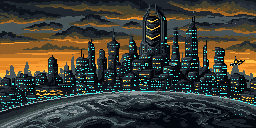
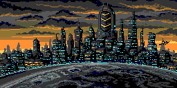
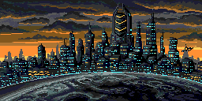
Displayed RGB shades: 17 → 26. Model squared-RGB error decreases 54.73%. This metric is not an artistic score.
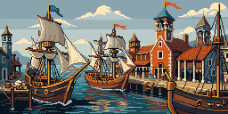
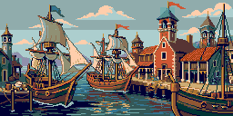
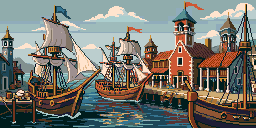
Displayed RGB shades: 22 → 47. Model squared-RGB error decreases 61.66%. This metric is not an artistic score.